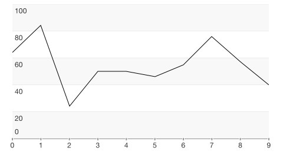
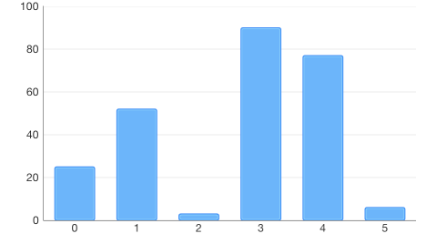

Chart: Populating with Data
In order for TKChart to represents data, we should supply this data to it. Following the Model-View-Controller design pattern, the data source mediates between the application’s data model (that is, its model objects) and the chart view. The data source provides the chart-view object with the information it needs to construct visualization using different chart types.
TKChart can be bound to a wide variety of data sources. The common way to work with chart-view' data source is to subclass the UIViewController and adopt the TKChartDataSource protocol or subclass the built-in TKChartViewController to manage the data source. Another way is to automate this task using the binding mechanism of TKChart to setup the data source.
Configure data source using the TKChartDataSource protocol
Following this approach, we supply TKChart with data using a delegate. This works the same way as with UITableView. You should implement the TKChartDataSource protocol and specify the number of series, the number of points in each series, the series objects and the point objects. The TKChartDataSource has two required methods. The numberOfSeriesForChart: method tells the chart view how many series to display in the plot area, and the seriesForChart:atIndex: method provides the series to display. Optional methods allow the data source to configure data points for each series.
Here is a sample subclass of TKChartViewController which will provide TKChart with data points for one TKChartLineSeries:
Objective-C
@implementation DataSourceDelegate
- (void)viewDidLoad
{
[super viewDidLoad];
TKChart *chart = [[TKChart alloc] initWithFrame:CGRectInset(self.view.bounds, 10, 10)];
[self.view addSubview:chart];
chart.dataSource = self;
chart.autoresizingMask = UIViewAutoresizingFlexibleWidth | UIViewAutoresizingFlexibleHeight;
}
- (NSUInteger)numberOfSeriesForChart:(TKChart *)chart
{
return 1;
}
- (TKChartSeries *)seriesForChart:(TKChart *)chart atIndex:(NSUInteger)index
{
TKChartLineSeries *series = [chart dequeueReusableSeriesWithIdentifier:@"series1"];
if (!series) {
series = [[TKChartLineSeries alloc] initWithItems:nil reuseIdentifier:@"series1"];
series.title = @"Delegate series";
}
return series;
}
- (NSUInteger)chart:(TKChart *)chart numberOfDataPointsForSeriesAtIndex:(NSUInteger)seriesIndex
{
return 10;
}
- (idTKChartData)chart:(TKChart *)chart dataPointAtIndex:(NSUInteger)dataIndex forSeriesAtIndex:(NSUInteger)seriesIndex
{
TKChartDataPoint *point = [[TKChartDataPoint alloc] initWithX:@(dataIndex) Y:@(arc4random() % 100)];
return point;
}
- (void)didReceiveMemoryWarning
{
[super didReceiveMemoryWarning];
}
@end
Swift
class DataSourceDelegate: UIViewController, TKChartDataSource {
override func viewDidLoad() {
super.viewDidLoad()
let chart = TKChart(frame: CGRectInset(self.view.bounds, 10, 10))
self.view.addSubview(chart)
chart.dataSource = self
chart.autoresizingMask = UIViewAutoresizing.FlexibleWidth | UIViewAutoresizing.FlexibleHeight
}
func seriesForChart(chart: TKChart!, atIndex index: UInt) -> TKChartSeries! {
var series = chart.dequeueReusableSeriesWithIdentifier("series1") as? TKChartSeries
if series == nil {
series = TKChartLineSeries(items: nil, reuseIdentifier: "series1")
series!.title = "Series title"
}
return series
}
func numberOfSeriesForChart(chart: TKChart!) -> UInt {
return 1
}
func chart(chart: TKChart!, numberOfDataPointsForSeriesAtIndex seriesIndex: UInt) -> UInt {
return 10
}
func chart(chart: TKChart!, dataPointAtIndex dataIndex: UInt, forSeriesAtIndex seriesIndex: UInt) -> TKChartData! {
var point = TKChartDataPoint(x: dataIndex, y: Int(arc4random_uniform(100)))
return point
}
override func didReceiveMemoryWarning() {
super.didReceiveMemoryWarning()
}
}

Configure data source using binding to DataPoints collection
Another way to configure TKChart data source is to set up data points for the TKChartSeries object, and using the binding mechanism, the TKChart control will automatically create and set up the built-in TKChartBindDingataSource for you.
Here is a TKChartColumnSeries with an attached collection of data points:
Objective-C
TKChart *chart = [[TKChart alloc] initWithFrame:CGRectInset(self.view.bounds, 10, 10)];
[self.view addSubview:chart];
chart.autoresizingMask = UIViewAutoresizingFlexibleWidth | UIViewAutoresizingFlexibleHeight;
NSArray *categories = @[ @"Greetings", @"Perfecto", @"NearBy", @"Family Store", @"Fresh & Green" ];
NSArray *values = @[ @70, @75, @58, @59, @88 ];
NSMutableArray *dataPoints = [[NSMutableArray alloc] init];
for (int i = 0; i < categories.count; i++) {
TKChartDataPoint *dataPoint = [[TKChartDataPoint alloc] initWithX:categories[i] Y:values[i]];
[dataPoints addObject:dataPoint];
}
TKChartColumnSeries *series = [[TKChartColumnSeries alloc] initWithItems:dataPoints];
[chart addSeries:series];
Swift
let chart = TKChart(frame: CGRectInset(self.view.bounds, 10, 10))
self.view.addSubview(chart)
chart.autoresizingMask = UIViewAutoresizing.FlexibleWidth | UIViewAutoresizing.FlexibleHeight
let categories = ["Greetings", "Perfecto", "NearBy", "Family Store", "Fresh & Green" ];
let values = [70, 75, 58, 59, 88]
var dataPoints = TKChartDataPoint[]()
for var i = 0; i < categories.count; ++i {
dataPoints.append(TKChartDataPoint(x: categories[i], y: values[i]))
}
let series = TKChartColumnSeries(items: dataPoints)
chart.addSeries(series)

Configure data source using binding to properties of model object
In order to support full binding mechanism and minimize the amount of code used to initialize data source with model object of your application, TKChart supports binding to properties of the model object. To use this powerful mechanism, you should describe in pairs the names of TKChartData properties related to the property names of your custom object.
Binding to an array of custom object is quite easy with TKChart. Once your array is created, you just need to set the necessary members to the desired field. In the code snippet below we create one application specific custom object and bind its data to three line series:
Objective-C
TKChart *chart = [[TKChart alloc] initWithFrame:CGRectInset(self.view.bounds, 10, 10)];
[self.view addSubview:chart];
chart.autoresizingMask = UIViewAutoresizingFlexibleWidth | UIViewAutoresizingFlexibleHeight;
NSMutableArray *dataPoints = [[NSMutableArray alloc] init];
for (int i = 0; i<=5; i++) {
CustomObject *object = [[CustomObject alloc] initWithObjectID:i value1:arc4random() % 100 value2:arc4random() % 100 value3:arc4random() % 100];
[dataPoints addObject:object];
}
[chart beginUpdates];
[chart addSeries:[[TKChartLineSeries alloc] initWithItems:dataPoints forKeys:@{ @"dataXValue": @"objectID", @"dataYValue": @"value1"}]];
[chart addSeries:[[TKChartAreaSeries alloc] initWithItems:dataPoints forKeys:@{ @"dataXValue": @"objectID", @"dataYValue": @"value2"}]];
[chart addSeries:[[TKChartScatterSeries alloc] initWithItems:dataPoints forKeys:@{ @"dataXValue": @"objectID", @"dataYValue": @"value3"}]];
[chart endUpdates];
Swift
let chart = TKChart(frame: CGRectInset(self.view.bounds, 10, 10))
self.view.addSubview(chart)
chart.autoresizingMask = UIViewAutoresizing.FlexibleWidth | UIViewAutoresizing.FlexibleHeight
var dataPoints = CustomObject[]()
for i in 0...5 {
let object = CustomObject(objectID: i, value1: Int(arc4random_uniform(100)), value2: Int(arc4random_uniform(100)), value3: Int(arc4random_uniform(100)))
dataPoints.append(object)
}
chart.beginUpdates()
chart.addSeries(TKChartLineSeries(items: dataPoints, forKeys: ["dataXValue": "objectID", "dataYValue": "value1"]))
chart.addSeries(TKChartAreaSeries(items: dataPoints, forKeys: ["dataXValue": "objectID", "dataYValue": "value2"]))
chart.addSeries(TKChartScatterSeries(items: dataPoints, forKeys: ["dataXValue": "objectID", "dataYValue": "value3"]))
chart.endUpdates()

Warning: TKChart by default creates and sets up axes automatically to support this flexible and codeless binding behavior using the data types in the provided data source. You can always change or replace the axis type for TKChartSeries or change it auto-calculated default range.